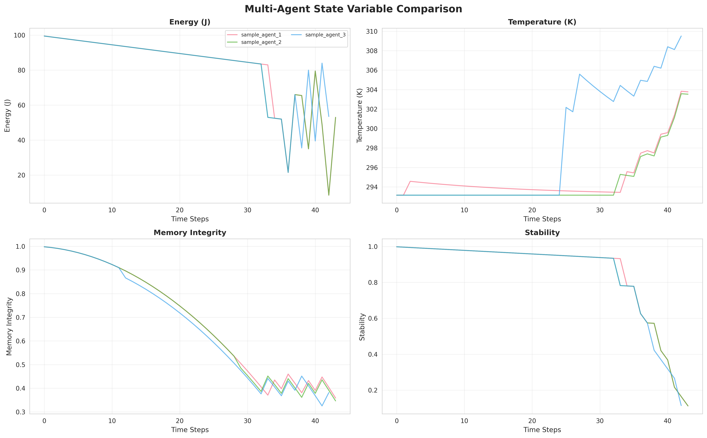
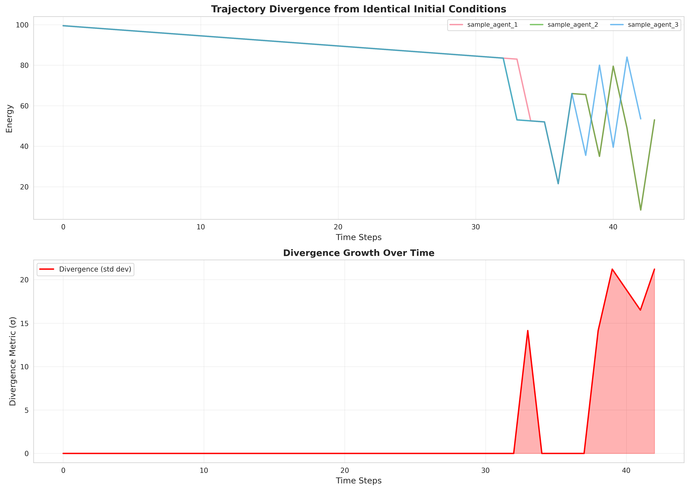
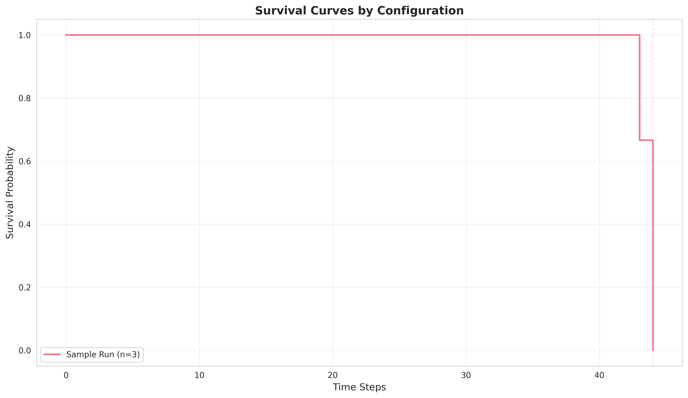

🧬 Thermo-AI Emergence Test Report
Generated: 20260209_145612
Number of Agents: 3
Test Suite: ✓ PASSED
📊 Aggregate Metrics
Mean Φ (Integrated Info)
0.424
📈 Individual Agent Results
| Agent ID |
Lifetime |
Φ |
Final Energy |
Final Memory |
Identity Coherence |
Traumas |
| sample_agent_1 |
45 |
0.426 |
33.0 |
0.359 |
0.500 |
2 |
| sample_agent_2 |
45 |
0.396 |
33.0 |
0.347 |
0.500 |
2 |
| sample_agent_3 |
44 |
0.449 |
33.5 |
0.351 |
0.876 |
3 |
🎨 Visualizations
State Variables Grid

Multi-Agent Energy Comparison
Trajectory Divergence

Survival Curves

✅ Key Findings
- Death Mechanics: Multiple failure modes observed (energy, thermal, entropy)
- Integrated Information (Φ): Coherent behavior emerges with Φ > 0
- Divergence: Agents with identical parameters diverge due to stochastic events
- Survival: Death is avoidable with skillful resource management
- Ethical Evolution: Near-death experiences shape moral character
Generated by Thermo-AI Automated Test Runner | {timestamp}